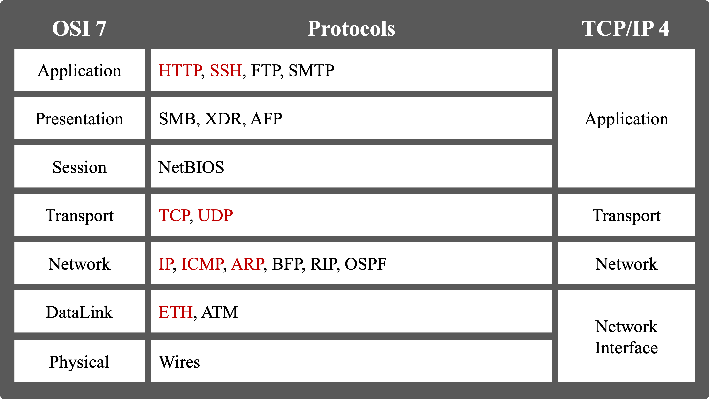
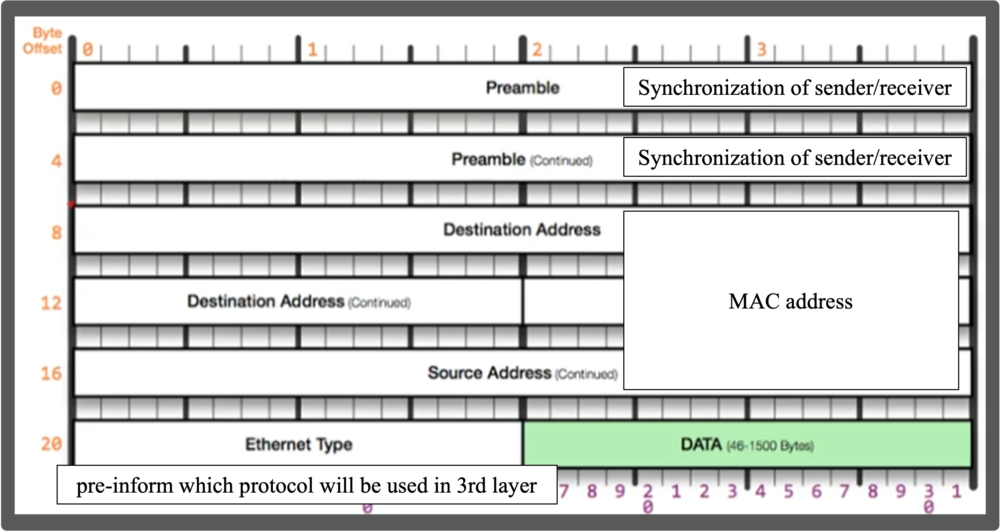
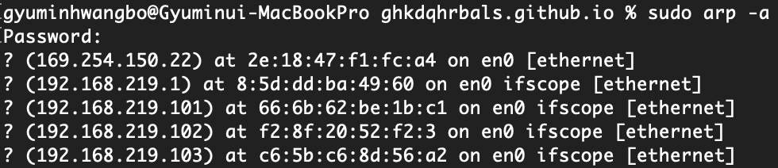
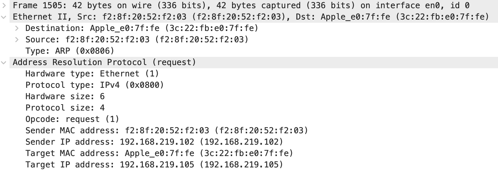
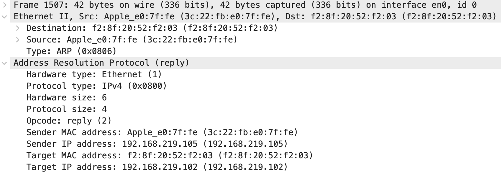
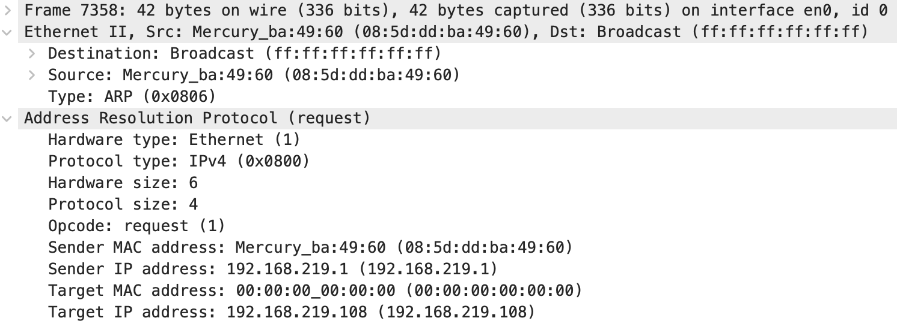
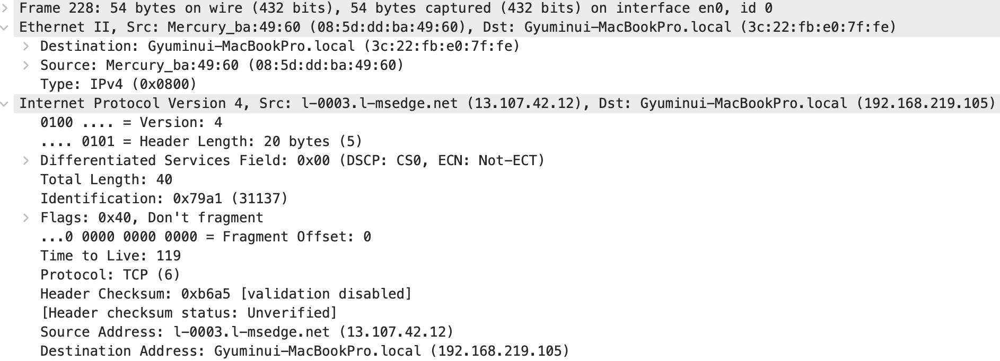
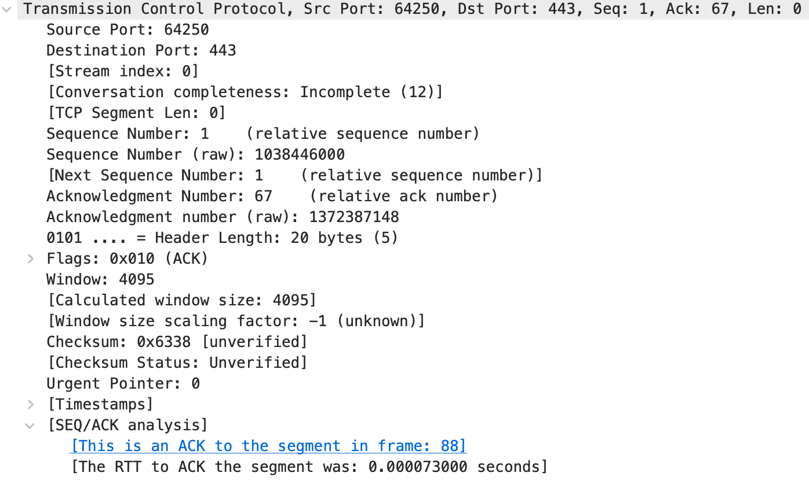
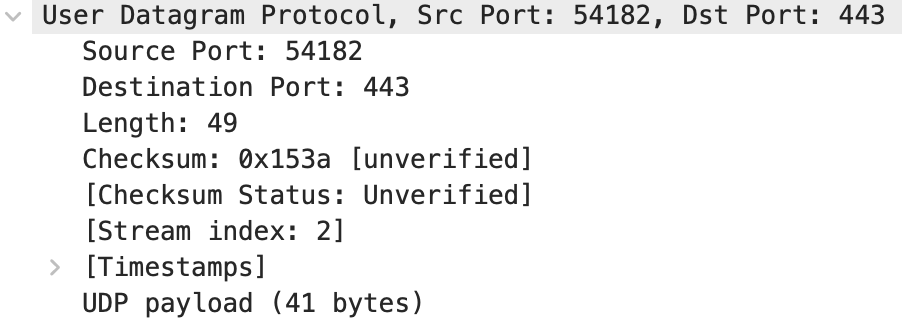

What is difference between OSI 7 Layers and TCP/IP 4 Layers?
There are 7 layers of OSI and 4 layers of TCP/IP which suppport every protocol of computer. The difference is that how they divide the layers. OSI 7 layers and TCP/IP 4 layers have some overlap and some don’t. See below.

Physical Layer
- PDU = Bit unit
PDU=Protocol Data Unit. Every layer has its PDU. For Physical Layer, “Bit”
- Mesh, Start (Hub) and Ring are representative of this layer.
This layer does not concern whether the bits wrong or have error. Only transmit or recept!
DataLink Layer
- PDU = Frame unit
- L2-Switch is representative of this layer
1 2 3 4 5 6 7 8 9 10 11 12
DataLink Layer (sublayers) |____ LCC(Logical Link Control) | |___ Flow control | |___ Multiplexing | |____ MAC(Medium Access Control) |___ CSMA/CD |___ CSMA/CA |___ Retransmission |___ Framing |___ FCS frame check sequence
- LCC : Provide Flow control & Multiplexing for logical link
- Flow-control : Prevents excessive reception by others
- Multiplexing : Mapping into a original packet from separated packets
- MAC : Dealing with collisions, framing, checking sequences.
- CSMA/CD,CA(Carrier Sense Multiple Access with Collision Detetion, Avoidance): If two users are both listen or transmit their packet in a same time, there should be collapsed!. With Media Access Control, frame recovery & avoid & retransmit are occured here.
- Framing : = capsulation. I bring the representative example of Framing(Ethernet) here. 
- MAC address consist of 12 hexadecimal characters. And MAC address is also called as NIC(Network Interface Card) number.
Network Layer
- PDU = Packet unit
- Router is representative of this layer
1
2
3
4
5
Network Layer
(protocol)
|____ ARP
|____ IP
|____ ICMP
ARP(Address Resolution Protocol)
- ARP : To communicate inside local network, MAC address is essential. ARP help to find right MAC address.
Here is a cached arp address in local network 
- ARP steps for find right MAC address. First
Apple_e0:7f:feis Desination address and that’s me. Asfe:8f:20:52:f2:03already know my IP and MAC address, he wants to know my IP and MAC address is correct.ARP Request 
- Response just switching Dst and Src.
ARP Response 
- However, if he dont know about MAC address or IP address? Here is examples.
ARP Request broadcasting(know Target IP) 
- Here, you can see Target IP is declared but still, MAC address is empty. This packet is broadcasted and if
192.168.219.108get this packet,192.168.219.108send back to192.168.219.1filled with its MAC address in Src MAC address. Thus, when you want to know target’s IP or MAC address, you should know at least one either IP or MAC address.
IP
- IP : In local network, we can communicate each others with MAC address. However, if you want to communicate outside of local network(Router), IP address is essential.
Here is example of how IP looks like. 
- TTL(Time To Live) is a hop limit for alive, and it is a good way for self destructing. However, TTL has limitations as below
The IPv4 RFC states that TTL is measured in seconds but acknowledges this is an imperfect measure. There is no way of knowing how long any particular host will take to process a packet and most will do so in far less than a second. In any case, based on this logic, in theory the maximum time a packet can exist in the network is 4.25 minutes (255 seconds). Hence, the TTL is described as a “self destruct time limit”.
(reference from https://packetpushers.net/ip-time-to-live-and-hop-limit-basics/)
- TTL is different by its OS. As my OS is MACOS, my hop limit will be 64.
| OS | hop limits | protocol |
|---|---|---|
| Linux kernel 2.4 (circa 2001) | 255 | TCP, UDP and ICMP |
| Linux kernel 4.10 (2015) | 64 | TCP, UDP and ICMP |
| Windows XP (2001) | 128 | TCP, UDP and ICMP |
| Windows 10 (2015) | 128 | TCP, UDP and ICMP |
| Windows Server 2008 | 128 | TCP, UDP and ICMP |
| Windows Server 2019 (2018) | 128 | TCP, UDP and ICMP |
| MacOS (2001) | 64 | TCP, UDP and ICMP |
ICMP
- ICMP(Internet Control Message Protocol) : This protocol manage whether specific IP address is reachable using various flags(e.g. Destination Unreachable, Ping, etc.)
Transport Layer
- PDU = Segment unit
- L4-switch is representative of this layer
- This layer allows users communicate with reliable data. So here also exist error detection and recovery.
1 2 3 4
Transport Layer (protocol) |____ TCP |____ UDP
The difference between TCP and UDP
| Protocol Type | TCP | UDP |
|---|---|---|
| Connection Type | connection-oriented protocol | connection-less protocol |
| Optimal use | HTTPS(<=HTTP 2.x), HTTP, SMTP, POP, FTP | HTTPS(HTTP 3.0), Video conferencing, streaming, DNS |
| Error checking | checksum, ack(duplication, sequence) | checksum |
| Data sequencing | able | unable |
| Retransmission | able | unable |
| Guaranteed delivery | able | Unable |
| Speed | low | high |
- TCP use 3-way handshake to verify the endpoint of users. 4-way handshake for cutting off connection. That means TCP stands for connection-oriented.
TCP structure  RTT is round trip time. SEQ/ACK analysis shows that this segment belongs to
frame 88, so can concatenate all segment into one packet for upper layer. - UDP doesn’t use any handshake. Sender dont know that receiver get the right packet or not.
UDP structure 
Nowadays packet loss rate is lower and lower, so we dont have to use TCP protocol. So recently HTTP 3.0 is made on UDP(not based on TCP) to speed up RTT.
Session Layer
- Session layer supports establishment, management, and termination of connections between the local and remote application. It provides for full-duplex, half-duplex, or simplex operation, and establishes check-pointing, adjournment, termination, and restart procedures.
if we set connection using TCP 3-way handshake, ACK and SEQ numbers, timestamps, etc. are stored in here.
Presentation Layer
- This layer supports encoding and decoding packets by its format(e.g. base64-encoding, image-format, html, etc.).
Application Layer
This layer has so many things to talk. So I will talk in next posts.